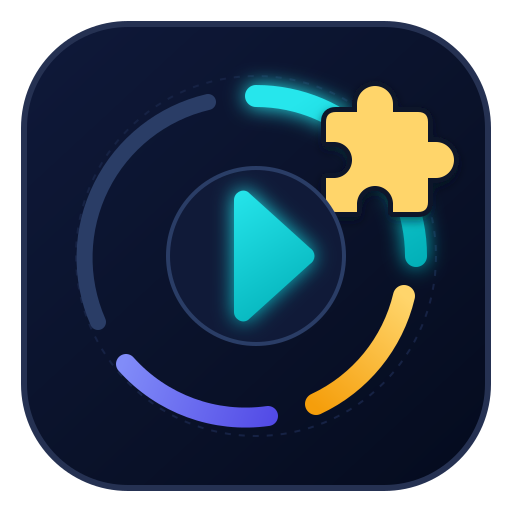

Microlección
Key takeaways
This is helpful

This material has no high-priority micro-lessons.
You can enable, hide, or change caption language using CC and Settings ⚙ in the YouTube player. Available options depend on the original video.